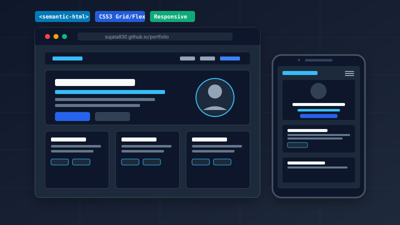
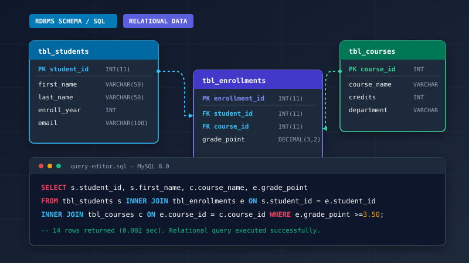

Web Development
Structuring semantic markup and crafting responsive, accessible presentation layers.
Welcome to my academic portfolio
Bachelor of Information Technology (BIT) Student
MIT College, Nepal • 2nd Year Coursework
I am an undergraduate IT student focused on building strong foundations in semantic web development, structured programming, relational database systems, and networking fundamentals. Passionate about learning modern computer science concepts through practical, clean code.
Background & Education
Hello! My name is Sujata Woad. I am currently in my second year of the Bachelor of Information Technology (BIT) degree at MIT College, Nepal.
My academic journey is rooted in developing a principled understanding of computer science and software development. Throughout my coursework, I have engaged with procedural and object-oriented programming in C, C++, and Python, structured data modeling with SQL, and standards-compliant web technologies using semantic HTML5 and CSS3.
I take pride in writing readable, maintainable code and understanding how technologies work beneath the surface—from client-server network protocols to relational database constraints. As an aspiring technologist, my goal is to continue strengthening my analytical problem-solving skills and applying classroom theory to practical academic projects.
Coursework & Competencies
A comprehensive overview of the programming languages, web standards, and developer tools acquired through university coursework and lab practice.
Structuring semantic markup and crafting responsive, accessible presentation layers.
Foundational programming across procedural and object-oriented paradigms.
Designing relational database schemas, integrity constraints, and query operations.
Developer tooling, version control systems, and core internet protocols.
Coursework & Lab Implementations
Curated coursework projects demonstrating semantic markup, external CSS layout systems, relational database modeling, and networking concepts.

A fully responsive, single-page student portfolio built with clean semantic HTML5 and custom external CSS3. Engineered without third-party frameworks to demonstrate strict separation of concerns, CSS custom properties, Flexbox navigation, CSS Grid components, accessible contrast, and static deployment via GitHub Pages.

An academic database system designed to model student enrollment, course curricula, and academic grading records. Implements relational schema architecture, primary/foreign key relationships, normalization rules, and structured SQL queries for record retrieval, updates, and academic reporting.

An interactive student evaluation tool developed to practice and test foundational computer networking concepts. Explores core internet topics including DNS resolution workflows, HTTP/HTTPS client-server communication, TCP/IP vs OSI model layers, and IP addressing schemes.
Get In Touch
Feel free to reach out regarding academic inquiries, collaborative student projects, or coursework discussions.
As a full-time BIT student, I check academic communications regularly. The fastest way to contact me is via my student email or GitHub repository.
Academic Transparency
All profile information, coursework topics, and repository references on this site represent verified academic work for BIT 2nd Year curriculum at MIT College, Nepal.